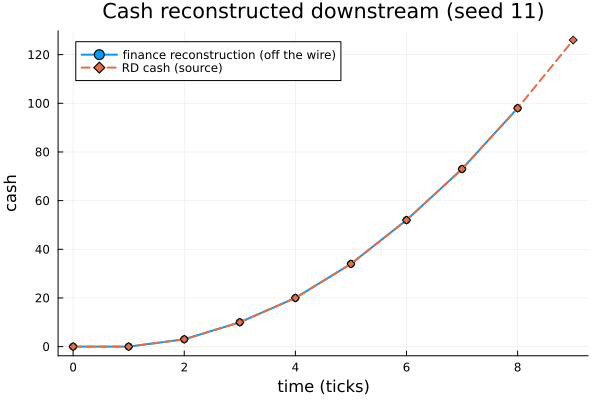

Expert tutorial — a portfolio as a node in a larger system
What you will build. This tier takes the portfolio you have been modeling and treats it as one component of a larger system. We will move the model out of Julia source and into a JSON document (a model is data), preview how fragments compose into it, then couple the whole thing to sibling agents — a market feeding it and a finance function reading off it — under a single simulation clock. We checkpoint a run mid-flight and restore it bit-for-bit, and we close on the analysis surface: an exec map of the coupled net rendered inline.
Who this is for. Readers who have worked through the introductory and advanced tutorials and are comfortable with the @reaction_network DSL, structured tokens, seeded ensembles, and reading prob.sol by column name. Here we stop building single models in isolation and start embedding them.
The mental model in one paragraph. A ReactionNetworkProblem is not a closed world. It is a first-class node in an AlgebraicAgents (AA) hierarchy: it can be read by its neighbours (they pull its place through getobservable) and it can read them back (it declares named input ports and consumes their observables through an ExternalRef leaf). The document that describes the network stays inert data — it names the ports it reads but never the agents that fill them; that wiring is host-side. And because the whole model is data, any run can be dumped at a clean tick boundary and restored exactly. That portability — data in, data out, deterministic under (hierarchy, seed) — is the subject of this tutorial.
using ReactiveDynamics
using ReactiveDynamics: validate, dump_state, restore, ExternalRef # unexported helpers used below
using AlgebraicAgents # entangle!/add_wire!/simulate/FreeAgent — reexported by RD
using Plots # inline figures
import JSON
const RD = ReactiveDynamicsReactiveDynamicsA tiny helper so a raw Graphviz SVG string renders as an inline figure in the built page: an object whose show(::MIME"image/svg+xml") prints the SVG. Literate writes it as a sidecar .svg the build inlines, so the exec map appears as a diagram rather than as escaped markup.
struct RawSVG
s::String
end
Base.show(io::IO, ::MIME"image/svg+xml", x::RawSVG) = print(io, x.s)1. The model is data: a JSON round-trip
Every model you have authored with @reaction_network has an equivalent as a single, inert JSON document. The engine loads it with from_json_model and emits it with to_json_model, and the loader never evals or Meta.parses a model field — it walks a typed IR and lowers it through the same compiler the DSL uses. The upshot is that an untrusted party (a colleague, an LLM) can author a model as data, and the worst a malicious field can do is fail validation. The serialization deep-dive covers the IR, the registry, and the RCE boundary in depth; here we only need the round-trip and its validator, because they are what make a network portable enough to drop into a larger system.
We author a small portfolio cash model directly as JSON. It has one grow transition that accrues cash, and — the piece that matters for coupling — a top-level inputs[] array declaring a single read port, sentiment, with a pre-wire default of 0.0. The rate of grow reads that port through an ExternalRef, so a hotter external market funds the portfolio faster. An in-model acquire rule (a once-lever) fires the first tick external sentiment clears a threshold and the portfolio has banked enough cash — an endogenous decision driven by external state.
const PORTFOLIO_JSON = """
{ "rd_format":"reactive-dynamics-model", "version":"1.0",
"meta":{ "tspan":8.0, "dt":1.0 },
"params":[ { "name":"base_inflow", "value":30.0 },
{ "name":"acq_cash_trigger", "value":50.0 },
{ "name":"sentiment_threshold", "value":0.45 } ],
"inputs":[ { "port":"sentiment", "default":{ "node":"const", "value":0.0 } } ],
"places":[ { "name":"cash", "init":0 },
{ "name":"acquired", "init":0 } ],
"transitions":[
{ "id":"grow", "name":"grow", "rate_mode":"deterministic",
"rate":{ "node":"call", "op":"*",
"args":[ { "node":"externalref", "port":"sentiment" },
{ "node":"ref", "kind":"param", "name":"base_inflow" } ] } } ],
"arcs":[
{ "transition":"grow", "side":"rhs", "place":"cash", "stoich":1 } ],
"rules":[
{ "id":"acquire", "fire_mode":"once",
"guard":{ "node":"call", "op":"&&",
"args":[ { "node":"call", "op":">",
"args":[ { "node":"externalref", "port":"sentiment" },
{ "node":"ref", "kind":"param", "name":"sentiment_threshold" } ] },
{ "node":"call", "op":">=",
"args":[ { "node":"ref", "kind":"place", "name":"cash" },
{ "node":"ref", "kind":"param", "name":"acq_cash_trigger" } ] } ] },
"action":{ "verb":"seq", "stmts":[
{ "verb":"set_marking", "name":"acquired", "mode":"inc",
"value":{ "node":"const", "value":1 } },
{ "verb":"log", "msg":"ACQUISITION: external sentiment cleared + cash trigger met" } ] } } ] }
""""{ \"rd_format\":\"reactive-dynamics-model\", \"version\":\"1.0\",\n \"meta\":{ \"tspan\":8.0, \"dt\":1.0 },\n \"params\":[ { \"name\":\"base_inflow\", \"value\":30.0 },\n { \"name\":\"acq_cash_trigger\", \"value\":50.0 },\n { \"name\":\"sentiment_threshold\", \"value\":0.45 } ],\n \"inpu" ⋯ 1124 bytes ⋯ "erb\":\"seq\", \"stmts\":[\n { \"verb\":\"set_marking\", \"name\":\"acquired\", \"mode\":\"inc\",\n \"value\":{ \"node\":\"const\", \"value\":1 } },\n { \"verb\":\"log\", \"msg\":\"ACQUISITION: external sentiment cleared + cash trigger met\" } ] } } ] }\n"validate runs before any model is built: it is a pure, eval-free structural check over the parsed document. An empty result means clean. One of its rules (rule 8) is exactly the one that keeps coupling honest — every ExternalRef.port must be a declared inputs[] port.
clean = validate(JSON.parse(PORTFOLIO_JSON))
println("validate(portfolio) -> ", isempty(clean) ? "OK (no diagnostics)" : clean)validate(portfolio) -> OK (no diagnostics)To see the validator earn its keep, we point the grow rate at a port the document never declared. That is a diagnostic, not an exception — and crucially not an eval:
bad = JSON.parse(PORTFOLIO_JSON)
bad["transitions"][1]["rate"]["args"][1]["port"] = "undeclared_signal"
bad_diags = validate(bad)
println("validate(model with an undeclared port) -> ", length(bad_diags), " diagnostic(s):")
for d in bad_diags
println(" ", string(d))
endvalidate(model with an undeclared port) -> 1 diagnostic(s):
[error] transitions[1].rate.args[1]: ExternalRef port `undeclared_signal` is not a declared inputs[] portA clean document builds into a runnable problem with from_json_model. The engine also emits a live model back to a document with to_json_model, so a model is data in both directions — author-as-JSON then load, and build then export. The serialization deep-dive walks the export half and its round-trip guarantees; here we just confirm the forward direction gives us a network that knows the input port it declared, which is what §3 wires into.
rd0 = from_json_model(PORTFOLIO_JSON; seed = 11)
println("built from JSON; declared input ports : ", collect(keys(rd0.external_inputs)))
println("its pre-wire `sentiment` buffer value : ", rd0.external_inputs[:sentiment], " (the declared default)")built from JSON; declared input ports : [:sentiment]
its pre-wire `sentiment` buffer value : 0.0 (the declared default)2. Composition, in one paragraph
Before we couple this network to other agents, it is worth naming the other axis of scale: composing a network from fragments. You do not have to author a large model in one block. A @pipeline writes a whole phase chain compactly; a @process fragment is a reusable, parameterized sub-model; @compose joins fragments by declared open ports (an :output port of one identified with a same-named :input port of another); and refine substitutes a finer sub-model for a single coarse transition, plug-compatibly — the boundary places keep their indices, so every other transition is structurally untouched. All of it is authoring-time and additive: the result is an ordinary network that constructs, serializes, and simulates like a hand-written flat one, and (like reindexing) it is forbidden on a live, stepping model.
We do not exercise the composition ladder here — the composition deep-dive is the place for the granularity story, and §5 closes this tutorial on a coarse-vs-refined ensemble agreement that shows why it matters. The point for now is only that the JSON document in §1 could equally have been assembled from fragments; either way what we hold is a portable network ready to become a node in something larger.
3. Coupling: the network as an AA node
Now the substance of this tier. A portfolio does not live alone — it sits beside a macro/market model that shapes its funding, and a finance function that consumes its cash. We model those as two ordinary AA agents in the host (they know nothing about the network's internals) and wire all three together under one root:
market ──▶ sentiment ─wire─▶ [ RD portfolio net ]
(a sibling │ getobservable
@aagent) ▼
cash ─wire─▶ finance (downstream sink)The sibling agents
MarketAgent is a source: it carries a sentiment signal that drifts upward each tick (rising deal appetite) and exports it as an observable so a wire can carry it into the network. Its custom constructor types its first argument ::AbstractString so dispatch picks it over the @aagent-generated positional signature.
@aagent struct MarketAgent
sentiment::Float64 # the exported signal (deal-appetite index, 0..1)
drift::Float64 # per-tick increment
dt::Float64
t::Float64
horizon::Float64
end
MarketAgent(name::AbstractString, s0::Real, drift::Real, dt::Real, horizon::Real) =
MarketAgent(name, Float64(s0), Float64(drift), Float64(dt), 0.0, Float64(horizon))Main.MarketAgentThe market's outbound surface: it exports one observable, sentiment.
AlgebraicAgents.observables(m::MarketAgent) = [:sentiment]
AlgebraicAgents.getobservable(m::MarketAgent, ::Union{Symbol, AbstractString}) = m.sentiment
AlgebraicAgents.getobservable(m::MarketAgent, ::Int) = m.sentiment
# Stepping: drift the sentiment upward, advance the clock.
AlgebraicAgents._step!(m::MarketAgent) = (m.sentiment += m.drift; m.t += m.dt; m.t)
AlgebraicAgents._projected_to(m::MarketAgent) = m.t > m.horizon ? true : m.tFinanceAgent is a sink: each tick it latches a wired-in value (the network's cash) and records what it sees. It reads its own incoming wires the same way the network reads its input ports — through retrieve_input_vars at _prestep! — so the finance read carries the same one-tick coupling lag and the same determinism guarantee.
@aagent struct FinanceAgent
cash_seen::Vector{Float64} # the wired-in RD cash, recorded each tick
dt::Float64
t::Float64
horizon::Float64
end
FinanceAgent(name::AbstractString, dt::Real, horizon::Real) =
FinanceAgent(name, Float64[], Float64(dt), 0.0, Float64(horizon))
function AlgebraicAgents._prestep!(f::FinanceAgent, t)
inputs = AlgebraicAgents.retrieve_input_vars(f) # Dict(to_var_name => value)
haskey(inputs, "rd_cash") && push!(f.cash_seen, Float64(inputs["rd_cash"]))
return f
end
AlgebraicAgents._step!(f::FinanceAgent) = (f.t += f.dt; f.t)
AlgebraicAgents._projected_to(f::FinanceAgent) = f.t > f.horizon ? true : f.tEntangle and wire
entangle! places the three agents under one FreeAgent root. Two add_wire! calls lay the topology — add_wire!(root; from, to, from_var_name, to_var_name) says "carry the source's observable from_var_name into the target's input to_var_name". This is the only place the cross-agent topology lives; the network's JSON document names only its sentiment port, never the market agent that fills it, so the document stays portable. We wrap the whole construction in a builder so §4 and §5 can rebuild an identical system on demand.
const HORIZON = 8.0
function build_system(; seed)
rd = from_json_model(PORTFOLIO_JSON; seed = seed)
market = MarketAgent("market", 0.0, 0.12, 1.0, HORIZON) # sentiment 0.0, +0.12/tick
finance = FinanceAgent("finance", 1.0, HORIZON)
root = FreeAgent("portfolio")
entangle!(root, market)
entangle!(root, rd)
entangle!(root, finance)
# wire 1 — INBOUND: the market's sentiment feeds the network's `sentiment` port.
add_wire!(root; from = market, to = rd, from_var_name = "sentiment", to_var_name = "sentiment")
# wire 2 — OUTBOUND: the network's cash (read via getobservable) feeds the finance agent.
add_wire!(root; from = rd, to = finance, from_var_name = "cash", to_var_name = "rd_cash")
return (; root, rd, market, finance)
end
sys = build_system(seed = 11)
println("hierarchy: portfolio (root) ⊇ {market, RD portfolio net, finance}")
println("RD exports observables : ", AlgebraicAgents.observables(sys.rd))
println("market sentiment at t=0 : ", AlgebraicAgents.getobservable(sys.market, :sentiment))
println("RD's pre-wire sentiment buffer: ", sys.rd.external_inputs[:sentiment], " (the declared default)")hierarchy: portfolio (root) ⊇ {market, RD portfolio net, finance}
RD exports observables : [:cash, :acquired]
market sentiment at t=0 : 0.0
RD's pre-wire sentiment buffer: 0.0 (the declared default)Run the whole thing under one clock
A coupled network is driven by simulate on the root, never on the network directly. AA's step first walks every agent's _prestep! (the latch phase — where the network and the finance agent read their incoming wires, once, for the tick), then steps each agent whose projected time equals the hierarchy minimum. So every external read in a tick is the source's previous-tick-boundary value — a one-tick Jacobi lag. That is deliberate: it closes the algebraic loop a live mid-step cross-agent read would open, and it is what makes the coupled run reproducible from (hierarchy, seed) alone, independent of the order AA happens to step siblings in. The lag is why the finance series in §4 is the cash trajectory shifted by one tick.
simulate(sys.root)
cash = round.(sys.rd.sol.cash; digits = 1)
acquired = Int.(sys.rd.sol.acquired)
println("RD cash trajectory (grow rate = sentiment × base_inflow, latched one tick late):")
println(" t : ", Int.(sys.rd.sol.t))
println(" cash : ", cash)
println(" acquired (the lever) : ", acquired)
acq_tick = findfirst(>(0.0), sys.rd.sol.acquired)
println(
"the acquisition lever fired at t = ",
isnothing(acq_tick) ? "never" : Int(sys.rd.sol.t[acq_tick]),
" — the first tick BOTH external sentiment cleared its threshold AND cash ≥ trigger."
)
println("rule `acquire` still enabled? ", sys.rd.rules[1].enabled, " (false ⇒ the :once lever has fired)")ACQUISITION: external sentiment cleared + cash trigger met
RD cash trajectory (grow rate = sentiment × base_inflow, latched one tick late):
t : [0, 1, 2, 3, 4, 5, 6, 7, 8, 9]
cash : [0.0, 0.0, 3.0, 10.0, 20.0, 34.0, 52.0, 73.0, 98.0, 126.0]
acquired (the lever) : [0, 0, 0, 0, 0, 0, 1, 1, 1, 1]
the acquisition lever fired at t = 6 — the first tick BOTH external sentiment cleared its threshold AND cash ≥ trigger.
rule `acquire` still enabled? false (false ⇒ the :once lever has fired)Determinism of the coupled trajectory
The whole reason for latching external reads at _prestep! is that the coupled run is a function of (hierarchy, seed) and nothing else. We build and run the same system twice and confirm both the network's trajectory and the finance agent's latched reads are identical.
a = build_system(seed = 11); simulate(a.root)
b = build_system(seed = 11); simulate(b.root)
println("two independent coupled runs, same seed:")
println(" RD trajectories identical (sol == sol)? ", a.rd.sol == b.rd.sol)
println(" finance reads identical? ", a.finance.cash_seen == b.finance.cash_seen)ACQUISITION: external sentiment cleared + cash trigger met
ACQUISITION: external sentiment cleared + cash trigger met
two independent coupled runs, same seed:
RD trajectories identical (sol == sol)? true
finance reads identical? true4. Checkpoint and restore
Because the model is data, so is a run. dump_state(prob) serializes a live run at a clean tick boundary into an eval-free, JSON-able artifact — the clock, the RNG state, creation counters, the plain place column u, the token population with current field values, and the once-rule latches. restore(spec, dump) rebuilds an identical problem from the same network spec (not from the JSON text — restore takes the constructed ReactionNetwork, overlaying the dumped state onto a fresh build of it), and resuming the restored copy reproduces the original's continuation exactly. (The serialization deep-dive details the dump schema; dumping requires an empty in-flight set — a clean tick boundary — which is the Milestone-1 scope.)
We demonstrate the round-trip on a small self-contained model. It is a plain-place work queue: a backlog pool drained by an instantaneous work transition (cycletime => 0.0, so nothing is ever in-flight at a boundary) and refilled by a Poisson intake. We hold the built network as spec so we can both construct the run and, later, hand the same spec to restore.
function checkpoint_model()
net = @reaction_network begin
@deterministic(50.0), backlog --> cleared, name => work, cycletime => 0.0, probability => 1.0
2.0, ∅ --> backlog, name => intake
end
@prob_init net backlog = 5 cleared = 0
@prob_params net
@prob_meta net tspan = 8 dt = 1.0
return net
end
spec = checkpoint_model()
check = ReactionNetworkProblem(spec; seed = 11)
simulate(check, 4) # step to a clean boundary at t = 4
println("stepped to t = ", check.t, "; in-flight transitions empty? ", isempty(check.ongoing_transitions))
dumped = dump_state(check)
println("dump_state: captured t=", dumped.t, ", u=", round.(dumped.u; digits = 1), " (eval-free, JSON-able)")
restored = restore(spec, dumped)
println("restore : t=", restored.t, ", u matches the original? ", restored.u == check.u)
simulate(check) # resume the original to the horizon
simulate(restored) # resume the restored copy
println("resume both to the horizon — final marking identical? ", check.u == restored.u)stepped to t = 4.0; in-flight transitions empty? true
dump_state: captured t=4.0, u=[4.0, 10.0] (eval-free, JSON-able)
restore : t=4.0, u matches the original? true
resume both to the horizon — final marking identical? truereinit! closes the loop the other way for a coupled node: it resets a run to t=0 and re-seeds the external-input buffer from the declared inputs[] defaults, so a stale latched wire value from a finished run cannot leak into the next one. We build a throwaway coupled system for this (so we leave the sys from §3 intact for the reads in §5), run it, and confirm the buffer returns to exactly its declared default.
spent = build_system(seed = 11); simulate(spent.root)
println(
"after the run, RD's latched sentiment = ", round(spent.rd.external_inputs[:sentiment]; digits = 3),
" (a stale wire value)"
)
AlgebraicAgents._reinit!(spent.rd)
println(
"after reinit, RD's sentiment buffer = ", spent.rd.external_inputs[:sentiment],
" (restored to the declared default)"
)
println("buffer equals the declared defaults snapshot? ", spent.rd.external_inputs == spent.rd.external_input_defaults)ACQUISITION: external sentiment cleared + cash trigger met
after the run, RD's latched sentiment = 0.96 (a stale wire value)
after reinit, RD's sentiment buffer = 0.0 (restored to the declared default)
buffer equals the declared defaults snapshot? true5. Reading the coupled system
We have a coupled, checkpointable system. What does it tell us? Two reads close the tutorial: a structural one — the exec map, our hero visual — and a quantitative one — the cash trajectory the finance sibling reconstructed off the wire, framed against an ensemble.
The exec map (hero visual)
The analysis layer renders a network as a three-layer diagram. network_graph(prob) is a pure, dependency-free Petri-net view (place places, transition nodes, arcs). to_graphviz(g) emits DOT; draw_network(prob) renders it through Graphviz. exec_map(prob) decorates that structure with run statistics — place painted where their pool ran to a trough, and (for structured models) a selected cohort's path drawn as thick arcs. It is strictly read-only: it never mutates the run. Rendering is best-effort: if no Graphviz backend is present we still emit the DOT source, so a backend hiccup cannot fail the build.
g = network_graph(sys.rd)
println("network_graph — place : ", [s.name for s in g.places])
println(" transitions: ", [t.name for t in g.transitions])
println(" arcs : ", length(g.arcs))
# The DOT source is always available, backend or not — this is what draw_network/exec_map render.
dot = to_graphviz(g)
println("to_graphviz emitted ", length(dot), " bytes of DOT source")network_graph — place : [:cash, :acquired]
transitions: [:grow]
arcs : 1
to_graphviz emitted 190 bytes of DOT sourceWe render the exec map, wrapped so a missing backend degrades to the DOT source. With no path, exec_map returns the rendered SVG bytes as a String; we hand that to RawSVG so it inlines as a figure. Graphviz's dot is present in the docs build environment, so this renders inline as the closing structural visual; the block's last expression is what the page displays.
exec_map_figure = try
RawSVG(exec_map(sys.rd; format = "svg"))
catch err
@warn "exec_map: no Graphviz backend — falling back to the DOT source" exception = err
Text(dot)
end
exec_map_figure
-->
<!-- Title: reactive_network Pages: 1 -->
<svg width="155pt" height="132pt"
viewBox="0.00 0.00 154.85 132.43" xmlns="http://www.w3.org/2000/svg" xmlns:xlink="http://www.w3.org/1999/xlink">
<g id="graph0" class="graph" transform="scale(1 1) rotate(0) translate(4 128.43)">
<title>reactive_network</title>
<polygon fill="white" stroke="transparent" points="-4,4 -4,-128.43 150.85,-128.43 150.85,4 -4,4"/>
<!-- cash -->
<g id="node1" class="node">
<title>cash</title>
<ellipse fill="gold" stroke="black" cx="124.91" cy="-21.94" rx="21.88" ry="21.88"/>
<text text-anchor="middle" x="124.91" y="-19.74" font-family="Times,serif" font-size="9.00">cash</text>
</g>
<!-- acquired -->
<g id="node2" class="node">
<title>acquired</title>
<ellipse fill="gold" stroke="black" cx="33.49" cy="-90.94" rx="33.47" ry="33.47"/>
<text text-anchor="middle" x="33.49" y="-88.74" font-family="Times,serif" font-size="9.00">acquired</text>
</g>
<!-- grow -->
<g id="node3" class="node">
<title>grow</title>
<polygon fill="none" stroke="black" points="60.49,-39.94 6.49,-39.94 6.49,-3.94 60.49,-3.94 60.49,-39.94"/>
<text text-anchor="middle" x="33.49" y="-19.74" font-family="Times,serif" font-size="9.00">grow</text>
</g>
<!-- grow&%2345;>cash -->
<g id="edge1" class="edge">
<title>grow&%2345;>cash</title>
<path fill="none" stroke="black" d="M60.83,-21.94C70.78,-21.94 82.18,-21.94 92.54,-21.94"/>
<polygon fill="black" stroke="black" points="92.85,-25.44 102.85,-21.94 92.85,-18.44 92.85,-25.44"/>
</g>
</g>
</svg>
)
The quantitative read: cash off the wire
The finance agent never touched the network — it only read rd_cash off its incoming wire each _prestep!. Because that read is pinned at the latch (the source's previous boundary), the series it recorded is the network's cash trajectory, shifted by exactly one tick. That is the coupled-system read: a downstream agent reconstructs an upstream agent's state purely through getobservable, with no knowledge of how it is computed. We plot the two series against each other so the lag is visible — the reconstruction sits one tick behind the source and stops one tick short.
fin = sys.finance.cash_seen
plot(
(0:(length(fin) - 1)), fin;
label = "finance reconstruction (off the wire)", marker = :circle, lw = 2,
xlabel = "time (ticks)", ylabel = "cash", title = "Cash reconstructed downstream (seed 11)",
)
plot!(Int.(sys.rd.sol.t), sys.rd.sol.cash; label = "RD cash (source)", lw = 2, ls = :dash, marker = :diamond)
Reading the result
The relationship is not approximate — it is exact. The finance agent's whole recorded series equals the network's cash trajectory dropped by its last tick, and the horizon value it reconstructs is precisely the network's cash one tick earlier. The lag is the only difference the coupling introduces, and it is the same whatever seed we run the hierarchy under.
reconstructed = Int(last(fin))
source_prev = Int(sys.rd.sol.cash[end - 1])
exact = fin == sys.rd.sol.cash[1:(end - 1)]
cross_seed = all(k -> (s = build_system(seed = hash((2026, k))); simulate(s.root); s.finance.cash_seen == s.rd.sol.cash[1:(end - 1)]), 1:8)
println("finance's reconstruction == RD cash shifted one tick? ", exact)
println(" cash the finance sibling reports at the horizon : ", reconstructed)
println(" RD's own cash one tick earlier : ", source_prev, " (⇒ the one-tick Jacobi lag)")
println(" holds identically across 8 independent seeds? : ", cross_seed)ACQUISITION: external sentiment cleared + cash trigger met
ACQUISITION: external sentiment cleared + cash trigger met
ACQUISITION: external sentiment cleared + cash trigger met
ACQUISITION: external sentiment cleared + cash trigger met
ACQUISITION: external sentiment cleared + cash trigger met
ACQUISITION: external sentiment cleared + cash trigger met
ACQUISITION: external sentiment cleared + cash trigger met
ACQUISITION: external sentiment cleared + cash trigger met
finance's reconstruction == RD cash shifted one tick? true
cash the finance sibling reports at the horizon : 98
RD's own cash one tick earlier : 98 (⇒ the one-tick Jacobi lag)
holds identically across 8 independent seeds? : trueThe finance function reconstructs the portfolio's horizon cash as 98 — exactly the network's cash one tick earlier — purely by reading a wire, and it does so identically under every seed. The number itself is unremarkable; what matters is its kind. It is a value produced by one component of a heterogeneous system and consumed by another with the coupling made explicit — a known one-tick Jacobi lag — rather than smuggled through a shared mutable buffer where a read-before-write hazard would make the result depend on sibling-stepping order. A downstream treasury or covenant calculation can be built against this series with confidence: it is exact up to a fixed lag and reproducible from (hierarchy, seed). The same machinery lets the market model shape the portfolio's funding rate and lets the in-model rule fire an acquisition on external state — all under one clock, all reproducible, and all checkpointable mid-flight.
This is what distinguishes the engine from a standalone simulator: a model is not a closed program but a portable, composable node. It rounds-trips through data (§1), assembles from fragments (§2), reads and is read by its neighbours (§3), and can be halted and resumed exactly (§4) — so a portfolio can be embedded in a market-and-finance system, or a whole company, without rewriting it.
Recap
You have, end to end:
- validated an eval-free JSON model and built it with
from_json_model(a model is data — the property that makes a network portable, withto_json_modelthe export inverse); - seen how fragments compose into a network (
@pipeline/@compose/refine), pointing to the composition deep-dive for the granularity ladder; - coupled the network into an AA hierarchy as a first-class node — read by a downstream finance agent via
getobservable, and reading an upstream market via a declared input port andExternalRef— wired host-side withadd_wire!, and run under onesimulate(root)with the one-tick Jacobi lag that keeps the coupled trajectory deterministic; - checkpointed a live run with
dump_stateand rebuilt it exactly withrestore, and reset the external buffer withreinit!; - read the coupled system both structurally (the
exec_maphero visual) and quantitatively (the cash a finance sibling reconstructs off a wire — exact up to the one-tick lag, invariant across seeds).
Next: the applied case studies put this machinery to work on decision questions — the shadow price of a binding resource, and what an in-licensing asset is worth to a living portfolio.